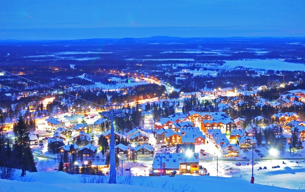
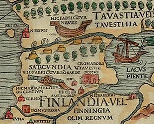
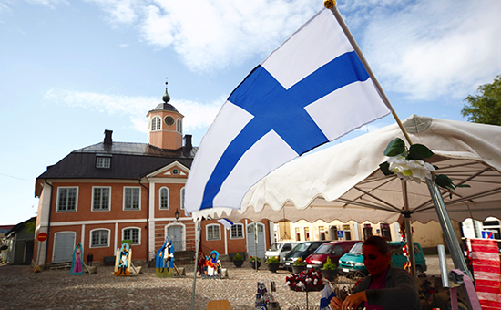

| Деревня Санта-Клауса
Финны, а с ними и жители западного мира, убеждены, что Санта-Клаус родом из Лапландии.
Поэтому в 9 км от города Рованиеми выстроили специальную резиденцию для финского Санты (его здесь зовут Йоулупукки), возле которой можно
кататься на северных оленях, а внутри – получать подарки из рук волшебного толстяка. Санта принимает гостей круглый год, без отдыха.
Десятки смешных гномов в его офисе сортируют мешки писем, которые приходят в Лапландию со всех концов света. Из сверкающей огнями деревни
Санты можно отправить письмо самим – конверт придет получателю со штампом резиденции Йоулупукки.
А в паспорт здесь ставят печать с отметкой «Полярный круг. Лапландия» Ф.И.О. |
 | |
|  |  |